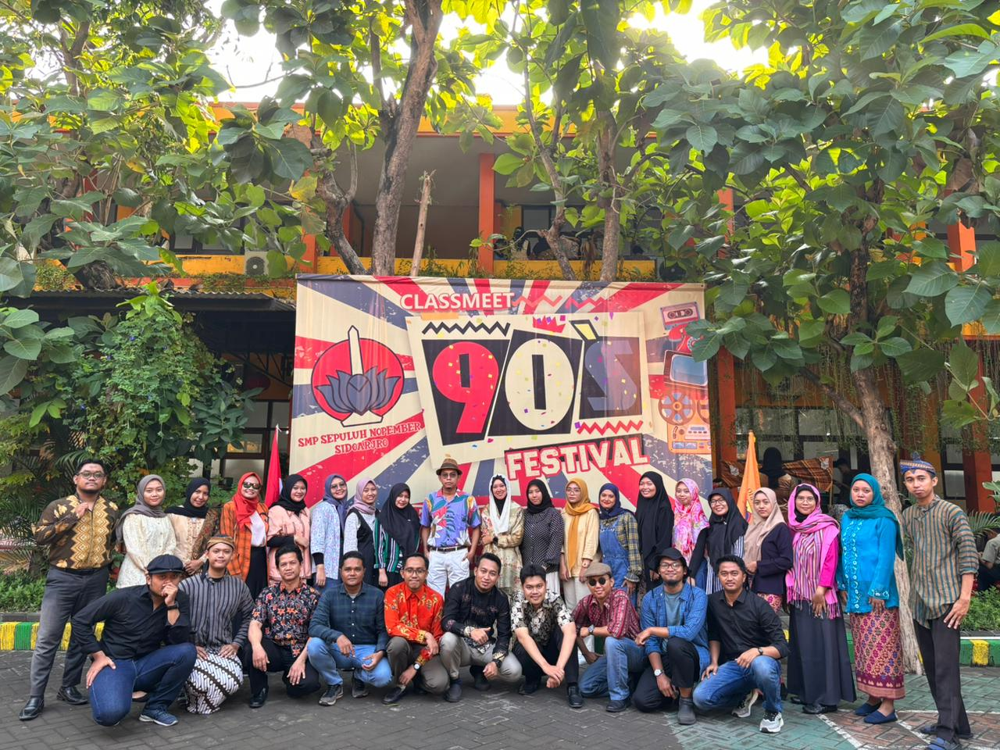

Artikel Terbaru

Perkemahan Dan Pelantikan Pramuka Penggalang
Di tulis Oleh : Anggota OsisKegitan perkemahan dan pelantikan Pramuka Penggalang Pangkalan SMP 10 Nopember Sidoarjo Dilakukan dengan tujuan supaya para siswa dan siswi bisa bersemangat dalam melakukan pramuka.

Orasi Kebangsaan Gus Miftah Di SMP 10 Nopember
Di tulis Oleh : M Saiful RohmanRibuan siswa SMP dan SMK Sepuluh Nopember ikuti acara Orasi Kebangsaan bersama kiai kondang asal Yogyakarta, KH Miftah Maulana Habiburrahman atau Gus Miftah, Senin (26/2).
Test Hemoglobin Di SMP 10 Nopember
Di tulis Oleh : Pihak SekolahTepat pada hari Rabu tanggal 7 Februari 2024, SMP Sepuluh Nopember Sidoarjo mengadakan kegiatan yang berhubungan dengan kesehatan yang diadakan oleh Kader UKS SPUBER yang bekerjasama dengan Puskesmas Buduran.
Festival Pakaian Jadul di Sekolah SMP 10 Nopember
Di tulis Oleh : Pihak SekolahAcara ini juga bisa digunakan untuk ajang modeling, seperti halnya dengan lomba Fashion show yang jadi salah satu lomba acara ini. Tema pakaian lomba ini yakni pahlawan nasional dengan tujuan supaya siswa dan siswi SMP Sepuluh Nopember mengenal pahlawan

SMP 10 Nopember Beri Fasilitas Siswa-Siswi Dalam Penguasaan Bahasa Inggris
Di tulis Oleh : Pihak SekolahCamp Kampoeng Sinau, adalah salah satu program pemantapan bahasa inggris yang ditujukan untuk kelas 7 Internasional SMP Sepuluh Nopember yang memiliki target dalam pengembangan kemampuan dasar peserta didik dalam penguasaan bahasa, salah satunya bahasa inggris.
Seluruh Siswa SMP 10 Nopember Bergerak Cinta Lingkungan
Di tulis Oleh : Pihak SekolahYakni, dalam rangkaian Anniversary ke 13 Sepuluh Nopember Sidoarjo mengambil tema ‘Spuber Aksi Cepat Goes Public’. Seluruh siswa SMP turun di Desa Siwalanpanji Buduran Sidoarjo yang terbagi dalam 15 titik untuk melakukan kebersihan lingkungan. Mulai di masjid, mushola, dan makam ulama.

Bupati Ahmad Mudlor Meresmikan Masjid Nur Rohim SMP 10 Nopember
Di tulis Oleh : Radar Jatim.IDUsai pembangunannya langsung diresmikan oleh Bupati Sidoarjo Ahmad Muhdlor ditandai dengan pemotongan pita dan penandatangan prasasti Masjid Nur Rohim. Serta didampingi oleh Kepala Dikbud Sidoarjo Dr. Tirto Adi, M.Pd, Ketua Yayasan Purnama Misti Hariasih, SE, MM
SMP 10 Nopember Mengadakan Lomba Melukis Se-Sidoarjo
Di tulis Oleh : Radar JatimIDPuluhan siswa SD/MI Negeri dan Swasta dari berbagai wilayah di Sidoarjo, beramai-ramai mendatangi Aula SPM Sepuluh Nopember, yang terletak di Desa Siwalanpanji, Kec Buduran Sidoarjo. Sambil didampingi orang tuanya, mereka ternyata mengikuti lomba menggambar dan melukis